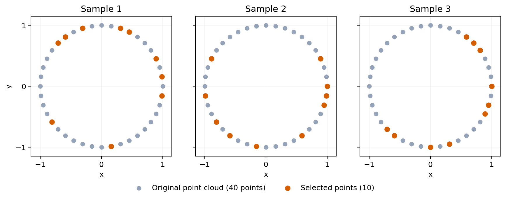
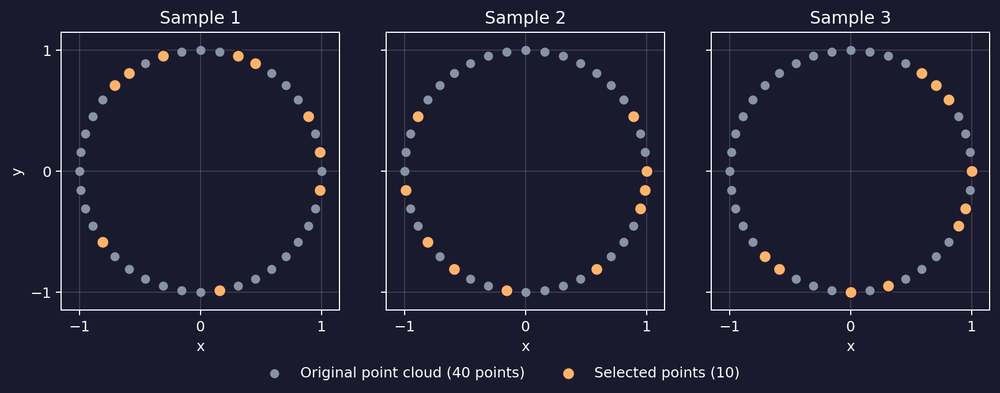
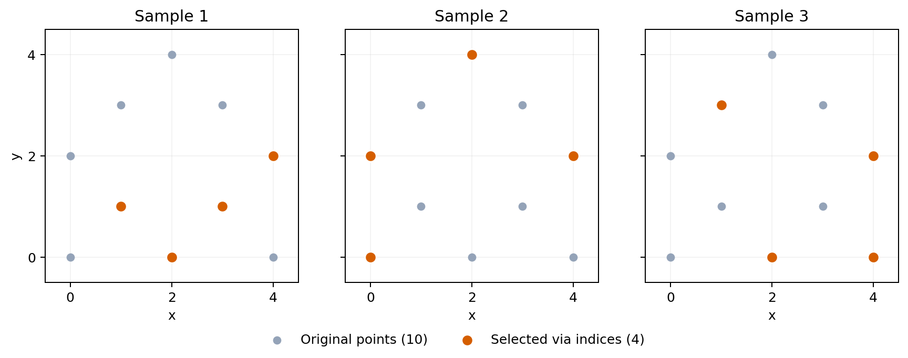
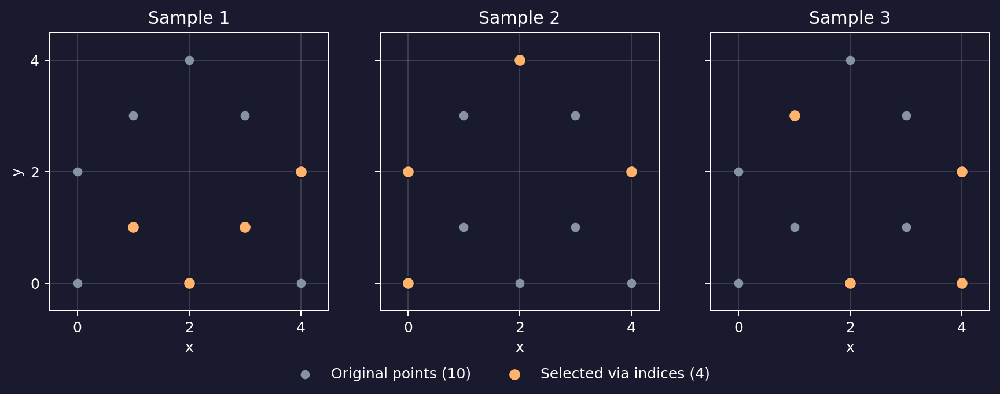

Subsampling#
For an introduction to coordinates, point indices, and pairwise distances, see Point clouds and distance matrices. For sampling with filter-based weights, see Relative subsampling. Options shared by both samplers, including replacement, small-input handling, duplicate removal, and generators, are documented in Shared subsampling options.
subsample() draws one or more uniform
subsamples from a single PointCloud or
DistanceMatrix, or from every value in a
PointCloudTensor or
DistanceMatrixTensor.
n_points is the positive number of draws requested per sample.
n_samples is the positive number of samples generated for each input point
cloud or distance matrix, defaulting to one. Samples are independent, so a
point can appear in several samples even when sampling without replacement.
The result has the same element family and precision. Empty and partial samples
retain the output axes. For a single point cloud or distance matrix, it is a
tensor of shape (n_samples,); for a tensor input, a sample axis is appended
to its shape:
import numpy as np
import stablebear as sb
cloud = sb.PointCloud(np.zeros((100, 3), dtype=np.float64))
samples = sb.random.subsample(
cloud,
n_points=25,
n_samples=8,
generator=sb.random.Generator(seed=5),
)
assert samples.shape == (8,)
assert samples[0].shape == (25, 3)
Point-cloud samples#
Each panel below shows the same 40 points, evenly spaced around a circle. The point cloud is constructed without randomness; only the selections are random. Ten points are selected without replacement in each sample and highlighted in orange. Selections are independent between samples, so a point can appear in more than one panel’s selection.




Show code
import matplotlib.pyplot as plt
import numpy as np
import stablebear as sb
def plot_point_cloud_subsamples(point_color="#94a3b8", selected_color="#d55e00"):
angles = np.linspace(0, 2 * np.pi, 40, endpoint=False)
points = np.column_stack((np.cos(angles), np.sin(angles)))
cloud = sb.PointCloud(points)
samples = sb.random.subsample(
cloud, n_points=10, n_samples=3,
generator=sb.random.Generator(seed=5),
)
fig, axes = plt.subplots(1, 3, figsize=(10, 3.6), sharex=True, sharey=True)
for i, ax in enumerate(axes):
selected = np.asarray(samples[i])
ax.scatter(points[:, 0], points[:, 1], s=28, color=point_color,
label="Original point cloud (40 points)", zorder=2)
ax.scatter(selected[:, 0], selected[:, 1], s=75, color=selected_color,
edgecolors=ax.get_facecolor(), linewidths=1.2,
label="Selected points (10)", zorder=3)
ax.set(title=f"Sample {i + 1}", xlabel="x", aspect="equal",
xlim=(-1.15, 1.15), ylim=(-1.15, 1.15),
xticks=[-1, 0, 1], yticks=[-1, 0, 1])
ax.grid(alpha=0.15)
axes[0].set_ylabel("y")
handles, labels = axes[0].get_legend_handles_labels()
fig.legend(handles, labels, loc="lower center", ncol=2, frameon=False)
fig.tight_layout(rect=(0, 0.12, 1, 1))
return fig
Distance-matrix samples#
For a distance matrix M and sampled index sequence S, the corresponding
result is the compressed symmetric principal submatrix M[S, S]. Sampled
order and repetitions are preserved, including zero distance between two
occurrences of the same source index.
For example, start with distances between three vertices, numbered 0, 1, and 2:
import numpy as np
import stablebear as sb
distances = np.array([
[0., 3., 4.],
[3., 0., 5.],
[4., 5., 0.],
])
matrix = sb.DistanceMatrix(distances)
samples = sb.random.subsample(
matrix, n_points=2, generator=sb.random.Generator(seed=5),
)
vertices = np.asarray(samples.indices[0])
sampled_matrix = np.asarray(samples[0])
If the drawn vertices are [2, 0], the sample takes rows 2 and 0 and
columns 2 and 0, in that order. Its rows and columns now represent those two
vertices, and their distance is 4:
# Matrix for the illustrative draw [2, 0]:
[[0., 4.],
[4., 0.]]
The actual draw is available in vertices; these illustrative draws do not
assume a particular generator seed. To reconstruct any sample from the dense
input, select the same vertices on both axes:
expected = distances[np.ix_(vertices, vertices)]
np.testing.assert_array_equal(sampled_matrix, expected)
With replace=True, a draw can repeat a vertex. For example, [2, 0, 2]
produces this matrix:
[[0., 4., 0.],
[4., 0., 4.],
[0., 4., 0.]]
The first and third rows represent the same original vertex, so their distance
is zero and their distances to every other sampled vertex agree. With
discard_duplicates=True, that draw becomes [2, 0], giving the 2×2
matrix above. Distinct vertices whose distance happens to be zero are retained.
Mapping sampled vertices back to points#
If the matrix was computed from known points, samples.indices lets you
recover their coordinates from the original point array. Here we start with
10 explicit points and use SciPy’s pdist to compute their pairwise
distances. DistanceMatrix accepts its condensed output directly:
from scipy.spatial.distance import pdist
points = np.array([
[0., 0.],
[2., 0.],
[4., 0.],
[1., 1.],
[3., 1.],
[0., 2.],
[4., 2.],
[1., 3.],
[3., 3.],
[2., 4.],
])
matrix = sb.DistanceMatrix(pdist(points))
samples = sb.random.subsample(
matrix, n_points=4, n_samples=3,
generator=sb.random.Generator(seed=5),
)
selected_points = points[samples.indices[0]]
selected_points contains the original coordinates in the same order as
the first sampled matrix’s rows and columns. Each panel below highlights the
four points recovered this way for one sample. Only the distance matrix is
passed to subsample; the coordinates come from indexing points.




Show code
def plot_distance_matrix_subsamples(point_color="#94a3b8", selected_color="#d55e00"):
import matplotlib.pyplot as plt
import numpy as np
from scipy.spatial.distance import pdist
import stablebear as sb
points = np.array([
[0., 0.],
[2., 0.],
[4., 0.],
[1., 1.],
[3., 1.],
[0., 2.],
[4., 2.],
[1., 3.],
[3., 3.],
[2., 4.],
])
# DistanceMatrix accepts SciPy's condensed pairwise distances directly.
matrix = sb.DistanceMatrix(pdist(points))
samples = sb.random.subsample(
matrix, n_points=4, n_samples=3,
generator=sb.random.Generator(seed=5),
)
indices = samples.indices
fig, axes = plt.subplots(1, 3, figsize=(10, 3.6), sharex=True, sharey=True)
for i, ax in enumerate(axes):
# Each matrix vertex index is a row of the original point array.
selected_points = points[indices[i]]
ax.scatter(points[:, 0], points[:, 1], s=28, color=point_color,
label="Original points (10)", zorder=2)
ax.scatter(selected_points[:, 0], selected_points[:, 1], s=75,
color=selected_color, edgecolors=ax.get_facecolor(),
linewidths=1.2, label="Selected via indices (4)", zorder=3)
ax.set(title=f"Sample {i + 1}", xlabel="x", aspect="equal",
xlim=(-0.5, 4.5), ylim=(-0.5, 4.5),
xticks=[0, 2, 4], yticks=[0, 2, 4])
ax.grid(alpha=0.15)
axes[0].set_ylabel("y")
handles, labels = axes[0].get_legend_handles_labels()
fig.legend(handles, labels, loc="lower center", ncol=2, frameon=False)
fig.tight_layout(rect=(0, 0.12, 1, 1))
return fig
See Shared subsampling options for inspecting selected indices.